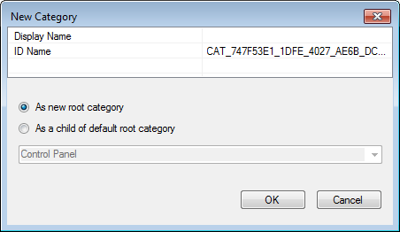
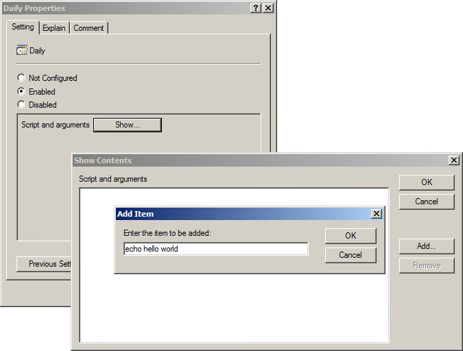

19 Writing Group Policy Extensions
The chapter will explain how to write a Group Policy Extension for Samba’s Winbind. Group Policy is a delivery mechanism for distributing system settings and company policies to machines joined to an Active Directory domain. Unix/Linux machines running Samba’s Winbind can also deploy these policies.
19.1 Creating the Server Side Extension
19.1.1 Administrative Templates
The first step to deploying Group Policy is to create a Server Side Extension (SSE). There are multiple ways to create an SSE, but here we’ll only discuss Administrative Templates (ADMX). The purpose of the SSE is to deploy policies to the SYSVOL share. Theoretically, you could manually deploy any file (even plain text) to the SYSVOL and then write a Client Side Extension that parses it, but ADMX can be read and modified by the Group Policy Management Editor, which makes administration of policies simpler.
ADMX files are simply XML files which explain to the Group Policy Management Console how to display and store a policy in the SYSVOL. AMDX files always store policies in Registry.pol files. Samba provides a mechanism for parsing these, which we’ll discuss later.
Below is a simple example of an ADMX template, and it’s corresponding ADML file.
samba.admx:
<policyDefinitions revision="1.0" schemaVersion="1.0">
<policyNamespaces>
<using prefix="windows"
namespace="Microsoft.Policies.Windows" />
</policyNamespaces>
<supersededAdm fileName="" />
<resources minRequiredRevision="1.0" />
<categories>
<category name="CAT_SAMBA"
displayName="$(string.CAT_SAMBA)" />
<category name="CAT_UNIX_SETTINGS"
displayName="$(string.CAT_UNIX_SETTINGS)">
<parentCategory ref="CAT_SAMBA" />
</category>
</categories>
<policies>
<policy name="POL_DAILY_SCRIPTS" class="Machine"
displayName="$(string.POL_DAILY_SCRIPTS)"
explainText="$(string.POL_DAILY_SCRIPTS_Help)"
presentation="$(presentation.POL_DAILY_SCRIPTS)"
key="Software\Policies\Samba\Unix Settings">
<parentCategory ref="CAT_UNIX_SETTINGS" />
<supportedOn ref="windows:SUPPORTED_WindowsVista" />
<elements>
<list id="LST_DAILY_SCRIPTS"
key="Software\Policies\Samba\
Unix Settings\Daily Scripts"
valueName="Daily Scripts" />
</elements>
</policy>
</policies>
</policyDefinitions>en-US/samba.adml:
<policyDefinitionResources revision="1.0" schemaVersion="1.0">
<displayName>
</displayName>
<description>
</description>
<resources>
<stringTable>
<string id="CAT_SAMBA">Samba</string>
<string id="CAT_UNIX_SETTINGS">Unix Settings</string>
<string id="POL_DAILY_SCRIPTS">Daily Scripts</string>
<string id="POL_DAILY_SCRIPTS_Help">
This policy setting allows you to execute commands,
either local or on remote storage, daily.
</string>
</stringTable>
<presentationTable>
<presentation id="POL_DAILY_SCRIPTS">
<listBox refId="LST_DAILY_SCRIPTS">
Script and arguments
</listBox>
</presentation>
</presentationTable>
</resources>
</policyDefinitionResources>The meaning of the various tags are explained in Microsoft’s Group Policy documentation at https://docs.microsoft.com/en-us/previous-versions/windows/desktop/policy/admx-schema. Before the endless documentation and confusing XML scares you away, be aware there is an easier way!
19.1.1.1 ADMX Migrator
FullArmor created the ADMX Migrator to simplify the shift for system administrators from the old ADM policy templates to ADMX. Fortunately, this tool also serves our purpose for assisting us in easily creating these templates for our SSE. Unfortunately, the tool hasn’t seen any development in the past 8 years, and wont run in Windows 10 (or any Unix/Linux platform, for that matter). I had to dredge up a Windows 7 VM in order to install and use the tool.
19.1.1.1.1 Creating the Administrative Template
Open ADMX Migrator
Right click on ADMX Templates in the left tree view, and click New Template.
Give your template a name, and click OK.
Right click on the new template in the left tree view, and click New Category.

- Give the Category a name. This name will be displayed in the Group Policy Management Editor under Administrative Templates. You can choose to nest template under an existing category, or simply add it as a new root.
Note: You can also add sub-categories under this category. After clicking OK, right click the category you created and select New Category.
- Next, create your policy by right clicking on your new category, and selecting New Policy Setting.

Because we’ll be applying these settings to a Linux machine, the Registry fields are mostly meaningless, but they are required. Your policies will be stored under these keys on the SYSVOL in the Registry.pol file. Choose some sensible Registry Key, such as ‘Software\Policies\Samba\Unix Settings’, and a Registry Value Name, such as ‘Daily Scripts’ (these are the values used for Samba’s cron.daily policy). The Display Name is the name that will be displayed for this policy in the Group Policy Management Editor. I usually make this the same as the Registry Value Name, but it doesn’t need to be.
Select whether this policy will be applied to a Machine, a User, or to Both in the Class field. In our example, we could potentially set Both, then our Client Side Extension would need to handle both cron.daily scripts (the Machine) and also User crontab entries. Click OK for your policy to be created.
Your new policy will appear in the middle list view. Highlight it, and you will see a number of tabs below for configuring the policy.

Select the Values tab and set the Enabled Value Type. In this case, we’ll use String, since our cron commands will be saved to the Registry.pol as a string. In the Value field, you can set a default enabled value (this is optional).
Select the Presentation tab, right click in the Elements view, and click New Element > ListBox (or a different presentation, depending on the policy). If you look at the samba.adml file from the previous section, you’ll notice that the presentationTable contains a listBox item. That’s what we’re creating here.
Choose an element Label, this will be the name for the list displayed in the Group Policy Management Editor.
Choose a Registry Key. This will be pre-populated with the parent Registry Key you gave when creating the policy. Append something to the key to make it unique. We’ll use ‘Software\Policies\Samba\Unix Settings\Daily Scripts’ for our cron.daily policy.
Navigate to the Explain tab, and add an explanation of what this policy is and what it does. This will be displayed to users in the Group Policy Management Editor.
Now right click on your template name in the left tree, and select Save As.
Finally, you’ll need to deploy your new policy definition to the SYSVOL. It should be saved to the Policies\PolicyDefinitions (the Group Policy Central Store) directory. These instructions from Microsoft can assist you in setting up your Group Policy Central Store.

19.1.2 samba-tool gpo manage
The samba-tool gpo manage command is a tool provided by the Samba team for managing Group Policy Objects (GPOs). This command provides a number of subcommands that allow you to add, remove, and list policies within a GPO.
Adding subcommands to samba-tool gpo manage is one way to create a Server Side Extension (SSE) for Group Policy. Each samba-tool gpo manage command generally provides 3 subcommands for each policy; add, remove, and list. These subcommands allow you to add new policies to a GPO, remove existing policies from a GPO, and list the policies that are currently configured in a GPO.
Group Policy SSEs should be added to samba-tool in the python/samba/netcmd/gpo.py file.
19.1.2.1 Subcommands
To add python subcommands using the SuperCommand class, you will need to create a new class that inherits from the SuperCommand class, and define a subcommands attribute that lists the subcommands that are supported by your command. The subcommands attribute will be a dictionary containing keys with new command names, paired with instances of Command classes which implement the command.
For example:
class cmd_scripts(SuperCommand):
"""Manage Scripts Group Policy Objects"""
subcommands = {}
subcommands["add"] = cmd_add_script()
subcommands["list"] = cmd_list_script()
subcommands["remove"] = cmd_remove_script()Your SuperCommand will then need to be tied into an existing samba-tool command, for example:
class cmd_manage(SuperCommand):
"""Manage Group Policy Objects"""
subcommands = {}
subcommands["sudoers"] = cmd_sudoers()
subcommands["security"] = cmd_security()
subcommands["smb_conf"] = cmd_smb_conf()
subcommands["symlink"] = cmd_symlink()
subcommands["files"] = cmd_files()
subcommands["openssh"] = cmd_openssh()
subcommands["motd"] = cmd_motd()
subcommands["issue"] = cmd_issue()
subcommands["access"] = cmd_access()
subcommands["scripts"] = cmd_scripts()Notice that the cmd_scripts SuperCommand from earlier has been appended to the cmd_manage list of subcommands.
19.1.2.1.1 Implementing an Add Subcommand
To write a command that adds a new policy to a Group Policy Object (GPO), you will need to create a class that inherits from the Command class provided by the samba.netcmd module, and define a run method that takes a series of arguments and options, and contains the code that will be executed when the command is run.
The run method should begin by connecting to a Domain Controller (DC) using the smb_connection function defined in python/samba/netcmd/gpo.py. It can then retrieve the data from the GPO’s Registry.pol file using the loadfile method of the connection object returned by the smb_connection function, or create a new file object if the file does not exist.
Next, the method can parse the data in the Registry.pol file using the ndr_unpack function from the samba.ndr module, which will return a file object representing the data in the file. We will then add a key to the list of entries in Registry.pol file object.
Finally, we save the modified file object back to the GPO’s Registry.pol file on the DC using the savefile method of the connection object.
The class should also define a synopsis attribute, which provides a brief summary of the command.
Here is an example of what it might look:
class cmd_add_script(Command):
"""Adds Script Group Policy to the sysvol
This command adds a script policy to the sysvol.
Example:
samba-tool gpo manage scripts add \
{31B2F340-016D-11D2-945F-00C04FB984F9} MACHINE daily \
test_script.sh '\\-n \\-p all'
policy_class is defined as either MACHINE or USER.
freq is defined as either Daily, Monthly, Weekly, or Hourly.
"""
synopsis = "%prog <gpo> <policy_class> <freq> <script> "
"[args] [options]"
takes_optiongroups = {
"sambaopts": options.SambaOptions,
"versionopts": options.VersionOptions,
"credopts": options.CredentialsOptions,
}
takes_options = [
Option("-H", "--URL",
help="LDB URL for database or target server",
type=str, metavar="URL", dest="H"),
]
takes_args = ["gpo", "policy_class", "freq", "script",
"args?"]
def run(self, gpo, policy_class, freq, script, args=None,
H=None, sambaopts=None, credopts=None,
versionopts=None):
policy_class = policy_class.upper()
if policy_class not in ['MACHINE', 'USER']:
raise CommandError("'%s' is not a valid policy_class."
" Choose from MACHINE or USER" % policy_class)
freq = freq.title()
if freq not in ['Daily', 'Monthly', 'Weekly', 'Hourly']:
raise CommandError("'%s' is not a valid frequency. "
"Choose from Daily, Monthly, Weekly, or "
"Hourly" % freq)
self.lp = sambaopts.get_loadparm()
self.creds = credopts.get_credentials(self.lp,
fallback_machine=True)
if not os.path.exists(script):
raise CommandError(
"Script '%s' does not exist" % script)
# We need to know writable DC to setup SMB connection
if H and H.startswith('ldap://'):
dc_hostname = H[7:]
self.url = H
else:
dc_hostname = netcmd_finddc(self.lp, self.creds)
self.url = dc_url(self.lp, self.creds, dc=dc_hostname)
# SMB connect to DC
conn = smb_connection(dc_hostname,
'sysvol',
lp=self.lp,
creds=self.creds)
realm = self.lp.get('realm')
pol_file = '\\'.join([realm.lower(), 'Policies', gpo,
'%s\\Registry.pol' % policy_class])
try:
pol_data = ndr_unpack(preg.file,
conn.loadfile(pol_file))
except NTSTATUSError as e:
if e.args[0] in [NT_STATUS_OBJECT_NAME_INVALID,
NT_STATUS_OBJECT_NAME_NOT_FOUND,
NT_STATUS_OBJECT_PATH_NOT_FOUND]:
# The file doesn't exist, so create it
pol_data = preg.file()
elif e.args[0] == NT_STATUS_ACCESS_DENIED:
raise CommandError("The authenticated user does "
"not have sufficient privileges")
else:
raise
reg_key = b'Software\\Policies\\Samba\\Unix Settings'
keyname = b'%s\\%s Scripts' % (reg_key, get_bytes(freq))
entry = '%s %s' % (script,
args if args is not None else '')
e = preg.entry()
e.keyname = keyname
e.valuename = reg_key
e.type = 1
e.data = get_bytes(entry)
entries = list(pol_data.entries)
entries.append(e)
pol_data.num_entries = len(entries)
pol_data.entries = entries
try:
conn.savefile(pol_file, ndr_pack(pol_data))
except NTSTATUSError as e:
if e.args[0] == NT_STATUS_ACCESS_DENIED:
raise CommandError("The authenticated user does "
"not have sufficient privileges")
raise19.1.2.1.2 Implementing a List Subcommand
To write a command that lists the policies for a Group Policy Object (GPO), you would need to create a class that inherits from the Command class provided by the samba.netcmd module, and define a run method that takes a series of arguments and options, and contains the code that will be executed when the command is run.
The run method should begin by connecting to a Domain Controller (DC) using the smb_connection function defined in python/samba/netcmd/gpo.py. It can then retrieve the data from the GPO’s Registry.pol file using the loadfile method of the connection object returned by the smb_connection function.
Next, the method can parse the data in the Registry.pol file using the ndr_unpack function from the samba.ndr module, which will return a file object representing the data in the file. The method can then iterate over the keys and values in the file object, printing out the names and data for each key.
The class should also define a synopsis attribute, which provides a brief summary of the command.
Here is an example of what it might look:
class cmd_list_script(Command):
"""List Script Group Policy from the sysvol
This command lists the script policies currently set on the sysvol.
Example:
samba-tool gpo manage scripts list \
{31B2F340-016D-11D2-945F-00C04FB984F9}
"""
synopsis = "%prog <gpo> [options]"
takes_optiongroups = {
"sambaopts": options.SambaOptions,
"versionopts": options.VersionOptions,
"credopts": options.CredentialsOptions,
}
takes_options = [
Option("-H", "--URL",
help="LDB URL for database or target server",
type=str, metavar="URL", dest="H"),
]
takes_args = ["gpo"]
def run(self, gpo, H=None, sambaopts=None, credopts=None,
versionopts=None):
self.lp = sambaopts.get_loadparm()
self.creds = credopts.get_credentials(self.lp,
fallback_machine=True)
# We need to know writable DC to setup SMB connection
if H and H.startswith('ldap://'):
dc_hostname = H[7:]
self.url = H
else:
dc_hostname = netcmd_finddc(self.lp, self.creds)
self.url = dc_url(self.lp, self.creds, dc=dc_hostname)
# SMB connect to DC
conn = smb_connection(dc_hostname,
'sysvol',
lp=self.lp,
creds=self.creds)
realm = self.lp.get('realm')
pol_file = '\\'.join([realm.lower(), 'Policies', gpo,
'%s\\Registry.pol'])
for policy_class in ['MACHINE', 'USER']:
self.outf.write('%s:\n' % policy_class)
try:
pol_data = ndr_unpack(preg.file,
conn.loadfile(pol_file % policy_class))
except NTSTATUSError as e:
if e.args[0] in [NT_STATUS_OBJECT_NAME_INVALID,
NT_STATUS_OBJECT_NAME_NOT_FOUND,
NT_STATUS_OBJECT_PATH_NOT_FOUND]:
# The file doesn't exist,
# so there is nothing to list
continue
elif e.args[0] == NT_STATUS_ACCESS_DENIED:
raise CommandError("The authenticated user "
"does not have sufficient privileges")
else:
raise
reg_key = 'Software\\Policies\\Samba\\Unix Settings'
for e in pol_data.entries:
if e.valuename == "**delvals.":
continue
if e.keyname.startswith(reg_key) and \
e.keyname.endswith('Scripts'):
self.outf.write("\t%s:\n" % e.keyname)
self.outf.write("\t\t%s\n" % e.data)19.1.2.1.3 Implementing a Remove Subcommand
To write a command that removes a policy from a Group Policy Object (GPO), you would need to create a class that inherits from the Command class provided by the samba.netcmd module, and define a run method that takes a series of arguments and options, and contains the code that will be executed when the command is run.
The run method should begin by connecting to a Domain Controller (DC) using the smb_connection function defined in python/samba/netcmd/gpo.py. It can then retrieve the data from the GPO’s Registry.pol file using the loadfile method of the connection object returned by the smb_connection function.
Next, the method can parse the data in the Registry.pol file using the ndr_unpack function, which will return a file object representing the data in the file. It then checks whether the entry specified in the “script” variable exists in the list of entries contained in the pol_data object. If the entry does exist, it is removed from the list and the number of entries in the list is updated.
Finally, we save the modified file object back to the GPO’s Registry.pol file on the DC using the savefile method of the connection object.
The class should also define a synopsis attribute, which provides a brief summary of the command.
Here is an example of what it might look:
class cmd_remove_script(Command):
"""Removes Script Group Policy from the sysvol
This command removes a script policy from the sysvol.
Example:
samba-tool gpo manage scripts remove \
{31B2F340-016D-11D2-945F-00C04FB984F9} MACHINE daily \
'test_script.sh \\-n \\-p all'
policy_class is defined as either MACHINE or USER.
freq is defined as either Daily, Monthly, Weekly, or Hourly.
"""
synopsis = "%prog <gpo> <policy_class> <freq> <script>"
"[options]"
takes_optiongroups = {
"sambaopts": options.SambaOptions,
"versionopts": options.VersionOptions,
"credopts": options.CredentialsOptions,
}
takes_options = [
Option("-H", "--URL",
help="LDB URL for database or target server",
type=str, metavar="URL", dest="H"),
]
takes_args = ["gpo", "policy_class", "freq", "script"]
def run(self, gpo, policy_class, freq, script, H=None,
sambaopts=None, credopts=None, versionopts=None):
policy_class = policy_class.upper()
if policy_class not in ['MACHINE', 'USER']:
raise CommandError("'%s' is not a valid policy_class."
" Choose from MACHINE or USER" % policy_class)
freq = freq.title()
if freq not in ['Daily', 'Monthly', 'Weekly', 'Hourly']:
raise CommandError("'%s' is not a valid frequency. "
"Choose from Daily, Monthly, "
"Weekly, or Hourly" % freq)
self.lp = sambaopts.get_loadparm()
self.creds = credopts.get_credentials(self.lp,
fallback_machine=True)
# We need to know writable DC to setup SMB connection
if H and H.startswith('ldap://'):
dc_hostname = H[7:]
self.url = H
else:
dc_hostname = netcmd_finddc(self.lp, self.creds)
self.url = dc_url(self.lp, self.creds, dc=dc_hostname)
# SMB connect to DC
conn = smb_connection(dc_hostname,
'sysvol',
lp=self.lp,
creds=self.creds)
realm = self.lp.get('realm')
pol_file = '\\'.join([realm.lower(), 'Policies', gpo,
'%s\\Registry.pol' % policy_class])
try:
pol_data = ndr_unpack(preg.file,
conn.loadfile(pol_file))
except NTSTATUSError as e:
if e.args[0] in [NT_STATUS_OBJECT_NAME_INVALID,
NT_STATUS_OBJECT_NAME_NOT_FOUND,
NT_STATUS_OBJECT_PATH_NOT_FOUND]:
raise CommandError("Cannot remove script '%s' "
"because it does not exist" % script)
elif e.args[0] == NT_STATUS_ACCESS_DENIED:
raise CommandError("The authenticated user does "
"not have sufficient privileges")
else:
raise
script = script.strip()
if script in ([e.data.strip() for e in pol_data.entries] \
if pol_data else []):
entries = [e for e in pol_data.entries \
if e.data.strip() != script]
pol_data.num_entries = len(entries)
pol_data.entries = entries
try:
conn.savefile(pol_file, ndr_pack(pol_data))
except NTSTATUSError as e:
if e.args[0] == NT_STATUS_ACCESS_DENIED:
raise CommandError("The authenticated user "
"does not have sufficient"
" privileges")
raise
else:
raise CommandError("Cannot remove '%s' because it"
" does not exist" % script)19.2 Creating the Client Side Extension
The following script defines a Group Policy Client Side Extension (CSE) in Python, which will be called by Samba’s Winbind to deploy our newly created policy. A CSE is a program that runs on a client machine and processes Group Policy Objects (GPOs) that are applied to the machine. The CSE processes the GPOs by applying the policies they contain to the client machine.
#!/usr/bin/python3
import os, re
from samba.gpclass import gp_pol_ext, gp_file_applier,
register_gp_extension, unregister_gp_extension,
list_gp_extensions
from tempfile import NamedTemporaryFile
from samba.gp.util.logging import log
from samba import getopt as options
import optparse
intro = '''
### autogenerated by samba
#
# This file is generated by the gp_scripts_ext Group Policy
# Client Side Extension. To modify the contents of this file,
# modify the appropriate Group Policy objects which apply
# to this machine. DO NOT MODIFY THIS FILE DIRECTLY.
#
'''
class gp_scripts_ext(gp_pol_ext, gp_file_applier):
def __str__(self):
return 'Unix Settings/Scripts'
def process_group_policy(self, deleted_gpo_list,
changed_gpo_list):
# Iterate over GPO guids and their previous settings,
# reverting changes made by this GPO.
for guid, settings in deleted_gpo_list:
# Use the unapply() function from the base class
# gp_file_applier to remove the files.
if str(self) in settings:
for attribute, script in \
settings[str(self)].items():
# Delete the applied policy
self.unapply(guid, attribute, script)
# Iterate over GPO objects, applying new policies found
# in the SYSVOL
for gpo in changed_gpo_list:
if gpo.file_sys_path:
reg_key = 'Software\\Policies\\' + \
'Samba\\Unix Settings'
sections = { '%s\\Daily Scripts' % reg_key :
'/etc/cron.daily',
'%s\\Monthly Scripts' % reg_key :
'/etc/cron.monthly',
'%s\\Weekly Scripts' % reg_key :
'/etc/cron.weekly',
'%s\\Hourly Scripts' % reg_key :
'/etc/cron.hourly'
}
# Load the contents of the Registry.pol
# from the SYSVOL
pol_file = 'MACHINE/Registry.pol'
path = os.path.join(gpo.file_sys_path, pol_file)
pol_conf = self.parse(path)
if not pol_conf:
continue
# Gather the list of policies to apply
policies = {}
for e in pol_conf.entries:
if e.keyname in sections.keys() and \
e.data.strip():
if e.keyname not in policies:
policies[e.keyname] = []
policies[e.keyname].append(e.data)
# Specify the applier function, which will be
# used to apply the policy.
def applier_func(keyname, entries):
ret = []
cron_dir = sections[e.keyname]
for data in entries:
with NamedTemporaryFile(prefix='gp_',
mode="w+",
delete=False,
dir=cron_dir) as f:
contents = '#!/bin/sh\n%s' % intro
contents += '%s\n' % data
f.write(contents)
os.chmod(f.name, 0o700)
ret.append(f.name)
return ret
# For each policy in the Registry.pol,
# apply the settings
for keyname, entries in policies.items():
# Each GPO applies only one set of each type
# of script, so so the attribute matches the
# keyname.
attribute = keyname
# The value hash is generated from the script
# entries, ensuring any changes to this GPO
# will cause the scripts to be rewritten.
value_hash = self.generate_value_hash(*entries)
self.apply(gpo.name, attribute, value_hash,
applier_func, keyname, entries)
# Cleanup any old scripts that are no longer
# part of the policy
self.clean(gpo.name, keep=policies.keys())
def rsop(self, gpo):
output = {}
pol_file = 'MACHINE/Registry.pol'
if gpo.file_sys_path:
path = os.path.join(gpo.file_sys_path, pol_file)
pol_conf = self.parse(path)
if not pol_conf:
return output
for e in pol_conf.entries:
key = e.keyname.split('\\')[-1]
if key.endswith('Scripts') and e.data.strip():
if key not in output.keys():
output[key] = []
output[key].append(e.data)
return output
if __name__ == "__main__":
parser = optparse.OptionParser('gp_scripts_ext.py [options]')
sambaopts = options.SambaOptions(parser)
parser.add_option_group(sambaopts)
parser.add_option('--register',
help='Register extension to Samba',
action='store_true')
parser.add_option('--unregister',
help='Unregister extension from Samba',
action='store_true')
(opts, args) = parser.parse_args()
# We're collecting the Samba loadparm simply to
# find our smb.conf file
lp = sambaopts.get_loadparm()
# This is a random unique GUID, which identifies this CSE.
# Any random GUID will do.
ext_guid = '{5930022C-94FF-4ED5-A403-CFB4549DB6F0}'
if opts.register:
# The extension path is the location of this file. This
# script should be executed from a permanent location.
ext_path = os.path.realpath(__file__)
# The machine and user parameters tell Samba whether to
# apply this extension to the computer, to individual
# users, or to both.
register_gp_extension(ext_guid, 'gp_scripts_ext',
ext_path, smb_conf=lp.configfile,
machine=True, user=False)
elif opts.unregister:
# Remove the extension and do not apply policy.
unregister_gp_extension(ext_guid)
# List the currently installed Group Policy Client Side
# Extensions
exts = list_gp_extensions(lp.configfile)
for guid, data in exts.items():
print(guid)
for k, v in data.items():
print('\t%s: %s' % (k, v))The CSE is defined by the gp_scripts_ext class, which is derived from the gp_pol_ext and gp_file_applier classes. The gp_pol_ext class provides a framework for processing GPOs, and the gp_file_applier class provides functions for applying GPO policies to files on the client machine.
19.2.1 The gp_ext and gp_applier Python Classes
Your CSE must be a class that inherits from subclasses of gp_ext and gp_applier. The gp_pol_ext is a subclass of gp_ext that provides simplified parsing of Registry.pol files. If you choose to store your policies in ini/inf files in the SYSVOL (instead of using Administrative Templates), then you can inherit from the gp_inf_ext instead. The gp_file_applier is a subclass of gp_applier which provides convenience functions for applying and unapplying policies which add files to the machine.
If your class inherits from either gp_pol_ext or gp_inf_ext, it has a parse() function defined, which takes a single filename. The parse() function will parse the contents of the policy file and return it in a sensible format.
If for some reason you choose to store data on the SYSVOL in some other format (such as in XML, etc), you’ll need to subclass gp_ext, then implement a read() function, like this:
import xml.etree.ElementTree
class gp_xml_ext(gp_ext):
def read(self, data_file):
return xml.etree.ElementTree.parse(data_file)The read() function is called by parse(), passing it a local filename tied to the systems SYSVOL cache. Then within process_group_policy() you can call parse() to fetch the parsed data from the SYSVOL.
The gp_file_applier class implements the helper functions apply and unapply. If you instead inherit from gp_applier directly, you’ll need to implement apply and unapply yourself. The gp_applier class provides various helper functions for assisting you in creating the apply and unapply functions.
19.2.2 Process Group Policy
The CSE has two main functions: process_group_policy and rsop. The process_group_policy function is called by the Group Policy engine on the client machine to process the GPOs that apply to the machine. It takes two arguments: deleted_gpo_list and changed_gpo_list. The deleted_gpo_list argument is a list of GPOs that MUST be removed from the machine, and the changed_gpo_list argument is a list of GPOs that have been changed (or are new) and MUST be re-applied to the machine.
The process_group_policy function serves two primary purposes; it applies new policy, and it removes old policy. It first iterates over the deleted_gpo_list, using the unapply function from the gp_file_applier class to remove the files that were applied by the GPOs.
for guid, settings in deleted_gpo_list:
if str(self) in settings:
for attribute, script in settings[str(self)].items():
self.unapply(guid, attribute, script)The deleted_gpo_list is a dictionary which contains the guids of Group Policy Objects, with associated settings which were previously applied. This list of applied settings is generated by the second loop (changed_gpo_list) while it is applying policy.
The process_group_policy function then iterates over the changed_gpo_list, applying the policies contained in the GPOs to the client machine. This second loop is a little more involved. When we iterate over changed_gpo_list, we’re actually iterating over a list of GPO objects. The attributes of the object are:
gpo.name: The GUID of the GPO.gpo.file_sys_path: A physical path to a cache of GPO on the local filesystem.
There are other methods and attributes, but these are the only ones important to a CSE.
The primary purpose of this loop is to iterate over the GPOs, read their policy in the SYSVOL, then check the sections for the Registry Key we created in our Server Side Extension. If our policy Registry Key exists, then we read the entry and apply the policy.
In our example, we find the ‘Software\Policies\Samba\Unix Settings\Daily Scripts’ policy, then read the script contents from Registry.pol entry and write the script to a local file.
The applier_func function is called to apply the policies contained in the GPOs to the client machine. It takes two arguments: keyname and entries. The keyname argument is the name of the policy being applied, and the entries argument is a list of the policy entries. The function writes the policy entries to randomly generated file names in the appropriate cron directories on the client machine, and returns the names of the temporary files. The file names will be stored in the Group Policy Cache, for retrieving later for the deleted_gpo_list.
19.2.3 Resultant Set of Policy
The rsop function in the extension is optional. It should return a dictionary containing key/value pairs of what our current policy will apply or has applied. The function is passed a list of GPO objects (similar to our changed_gpo_list), and we should parse the list similar to how we did in process_group_policy.
The rsop function generates the output for our Resultant Set of Policy. RSoP is a feature in Group Policy that allows you to determine the effective settings that are applied to a user or a computer as a result of Group Policy processing. RSoP provides a report that shows the policies that have been applied to the user or computer, as well as any conflicts or errors that may have occurred during Group Policy processing. RSoP can be used to troubleshoot Group Policy issues, to verify that the correct policies are being applied, and to determine the impact of Group Policy on a particular user or computer.
This function enables the samba-gpupdate --rsop command.
19.2.4 Registering/Unregistering a Client Side Extension
The CSE also includes a function for registering and unregistering the CSE with the Group Policy engine on the client machine. While the example code provides a detailed example of how to register an extension, the basic requirement is simply to call register_gp_extension().
ext_guid = '{5930022C-94FF-4ED5-A403-CFB4549DB6F0}'
ext_path = os.path.realpath(__file__)
register_gp_extension(ext_guid, 'gp_scripts_ext', ext_path,
smb_conf='/etc/samba/smb.conf', machine=True, user=False)The extension guid can be any random guid. It simply must be unique among all extensions that you register to the host. The extension path is literally just the path to the source file containing your CSE.
You must pass your smb.conf file to the extension, so it knows where to store the list of registered extensions. You also must specify whether to apply this extension to the machine, or to individual users (or to both).
Unregistering the extension is simple. You call the unregister_gp_extension() and pass it the unique guid you previously chose which represents this CSE.